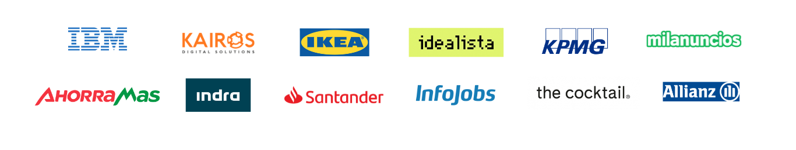

En Codenotch te convertimos en un profesional Tech.
MORE THAN LEARN. BECOME
Cursos intensivos de Programación Web Full Stack y Data Analytics
Nuestros alumnos trabajan en empresas como
Formación tecnológica con un claro objetivo
Convertir a nuestros estudiantes en auténticos profesionales de la programación impulsando su carrera en la industria digital.
Nuestra formación intensiva y práctica va dirigida a personas que desean formar parte del motor de cambio de la industria tecnológica en la era de la revolución digital.
Los Bootcamps son programas educativos vivos, en constante actualización para contener la evolución del sector. Son impartidos mediante una metodología personalizada, disruptiva y transformadora que cubre las necesidades de la realidad laboral.
92%
Tasa de empleabilidad
24.000€
Salario medio del primer empleo
34
Ediciones impartidas
Nuestros Cursos
Presencial o en remoto | Full time o part time
Desarrollo Web
Presencial o en remoto | Full time o part time
Data Science
¿Por qué Codenotch?
Impulsa tu carrera profesional
Aprende las competencias digitales que te abrirán las puertas del futuro.
Prepárate y entrena trabajando como lo harás en la empresa, con metodologías ágiles. Estarás completamente capacitado como profesional tecnológico.
Seguimiento personalizado
No estarás solo. Siéntete acompañado y atendido de inicio a fin. Encontrarás una formación personalizada impartida en grupos reducidos y en un entorno creado para la comodidad de tu aprendizaje.
Prepárate para encontrar trabajo de inmediato
Fórmate en las tecnologías que valora y demanda el mercado laboral actual.
Prepara tu marca personal con ayuda de nuestros expertos para optimizar tu perfil y trabajar tu búsqueda de empleo. Te ayudaremos a conseguir rápidamente tu objetivo profesional.
Conviértete en Top Notch Coder
No serás un programador más, serás un TNC. Aprenderás a resolver problemas pensando como un ingeniero: ‘in and out of the box’. Conocerás las mejores prácticas de programación y te enseñaremos a que produzcas un código limpio desde el principio.
Trabajarás con las metodologías ágiles que utilizan las empresas más eficientes en sus procesos de desarrollo. Optimizarás el uso de las herramientas y potenciarás las habilidades personales que todo buen profesional necesita para encontrar el trabajo ideal.